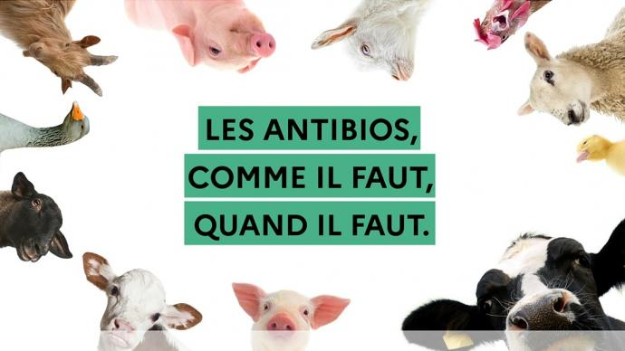

Différentes solutions pour pallier
le problème Accueil Page 5
(Selon The Lancet Planetary Health) : des interventions qui
limitaient l'utilisation d'antibiotiques chez les animaux destinés à l'alimentation humaine parvenaient à une
réduction de la présence de bactéries résistantes chez ces animaux allant jusqu'à 39%.
(Selon l'OMS) : une réduction globale de l'utilisation de toutes
les classes d'antibiotiques importants pour la médecine humaine chez les animaux de rente, et notamment une restriction
complète de l'utilisation de cesmédicaments en tant que promoteurs de croissance et à titre préventif
en l'absence de diagnostic, est fortement recommandé. Les animaux sains ne devront recevoir des
antibiotiques que pour prévenir une maladie diagnostiquée chez d'autres animaux du même
troupeau, du même élevageou de la même population dans le cas des poissons. De plus, dans la
mesure du possible, les animaux malades devront subir des tests pour déterminer quel choix
d'antibiotique serait le plus prudent et le plus efficace pour traiter leur infection spécifique. Les
antibiotiques utilisés chez ces animaux devront être sélectionnés parmi ceux recensés par l'OMS comme
les « moins importants » pour la santé humaine et non parmi ceux classés comme « d'importance
critique, les plus prioritaires ». Il s'agit souvent d'antibiotiques de dernière intention
ou d'un des rares traitements disponibles face à des infections bactériennes graves chez l'homme.
Pour remplacer les antibiotiques dans la prévention des maladies chez l'animal, il est
notamment proposé d'améliorer l'hygiène et l'utilisation des vaccins et de modifier les pratiques
d'hébergement et d'élevage des animaux. De plus, depuis 2006 par exemple, l'Union européenne a
interdit l'utilisation d'antibiotiques pour favoriser la croissance des animaux. Les
consommateurs participent aussi à la demande en viande provenant d'animaux élevés sans utilisation
systématique d'antibiotiques et certains acteurs majeurs de l'industrie alimentaire adoptent des
politiques de produits « sans antibiotique » pour les viandes qu'ils fournissent.
